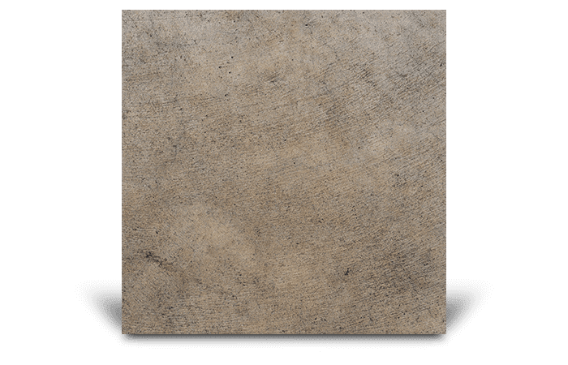
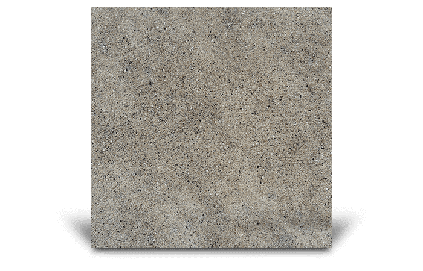
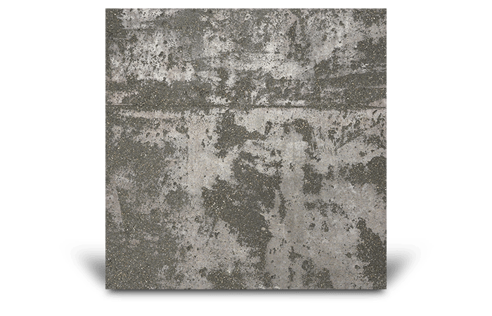

Choose your texture.
The most common consideration is how easy the floor is to clean and how safe and non-slip your exterior surface is
Select one of the options below. We recommend, however, that you talk to your contractor first about the right texture for your project.

Recommended concrete textures for your Patios & courtyards
NON-SLIP SURFACE

Medium Trowel
Textured finish for external residential concrete surfaces, ideal for patios and pool surrounds.

Sandstone
Textured finish for external residential concrete surfaces, ideal for patios and pool surrounds.

Texture Roll
Textured finish for external residential concrete surfaces, ideal for patios and pool surrounds.